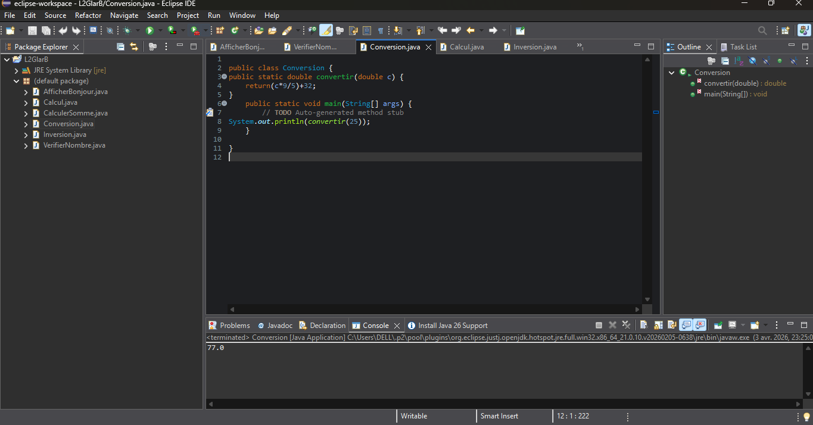
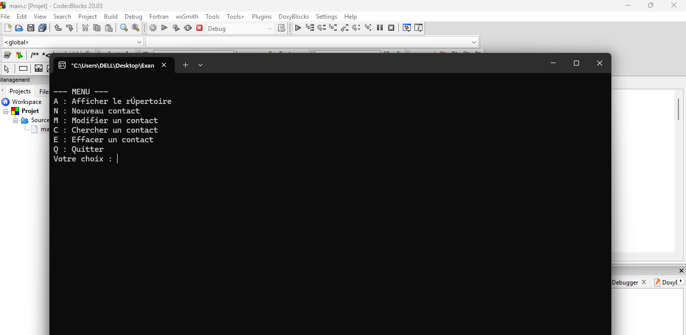
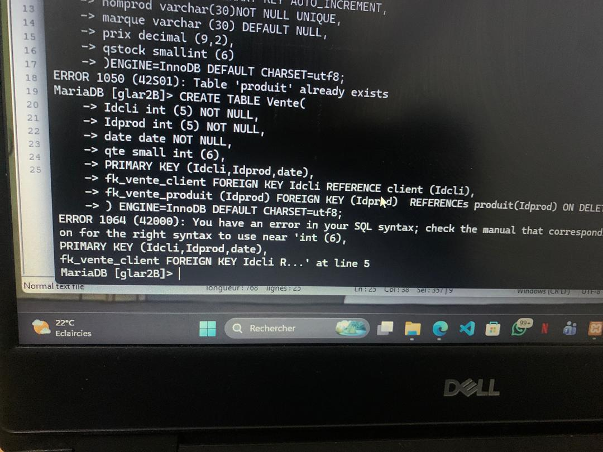
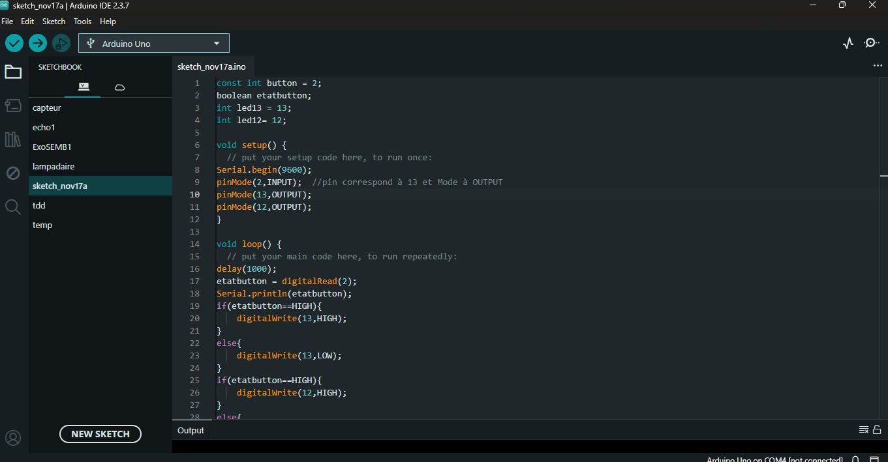

Ce projet réalisé sur Eclipse consistait à effectuer des exercices de programmation, notamment des conversions et manipulations de données. L’objectif était de mettre en pratique les notions de base en programmation, comme les variables, les opérations et l’affichage des résultats. Ce travail m’a permis de renforcer ma logique et de mieux comprendre le fonctionnement d’un programme simple.

Ce projet porte sur la résolution d’exercices d’algorithmique. Il s’agissait d’analyser des problèmes, de proposer des solutions logiques et de les structurer sous forme d’algorithmes. Ce travail a permis de développer ma capacité de raisonnement, ainsi que ma compréhension des structures de contrôle telles que les conditions et les boucles..

Ce projet consiste à créer et manipuler une base de données avec MySQL, notamment à travers la création d’une table. J’ai utilisé des requêtes SQL comme CREATE TABLE pour définir la structure des données. Ce projet m’a permis de comprendre les bases de la gestion de données et l’organisation d’une base de données relationnelle.

Ce projet consiste à programmer un système avec Arduino permettant d’allumer et d’éteindre des lampes. Il repose sur l’utilisation de composants électroniques et la programmation du microcontrôleur pour contrôler les sorties selon des conditions définies. Ce projet m’a permis de découvrir le fonctionnement des systèmes embarqués et d’interagir avec du matériel électronique de manière concrète..